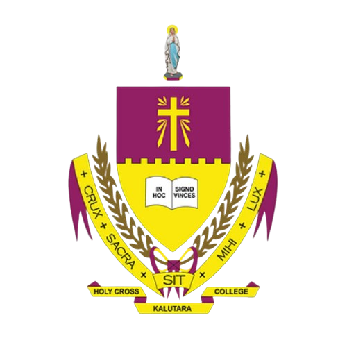

Holy Cross College, Kalutara
History

In the latter half of the 19th century, a Burgher national named Brohier took the initiative to establish a private school in a rented bungalow near Holy Cross Church.
In 1890, the parish priest of Kalamulla, Kalutara, Rev. Father Wilkinson, who served as the first rector, officially named the institution Holy Cross English School. Later, Rev. Father Leo Fernando, the founding principal of the present Holy Cross College and successor to Rev. Father Wilkinson, registered it as Holy Cross Upper English School. Through great effort, Father Leo Fernando secured government assistance, allowing the school to function as a semi-government institution.
In 1905, Rev. Fr. M. Herel from Nancy, France, became the rector, serving for seven years. He was succeeded by Rev. Fr. Robert Fernando, who introduced numerous innovations to the college. One of the most remarkable achievements during his tenure was when a student of Holy Cross College achieved the highest results in the Cambridge Examination among all Commonwealth countries.
From 1930 to 1946, Rev. Fr. Gaston Chaulieu, a French national, served as principal for an uninterrupted 16-year tenure. This era is often referred to as the Golden Era of Holy Cross College due to its remarkable achievements. Highlights of this period include the construction of new buildings, the introduction of inter-house athletic events, and the division of the school into separate sections for boys and girls. During this time, students sat for both the London Matriculation and Chamber of Commerce Examinations. Notably, British Governor Sir Edward Stubbs attended the Annual Prize-Giving Ceremony in 1935 and 1936 as the chief guest.
Rev. Fr. Arthur M. Fernando (1945–1948) became the first director of Holy Cross College. Under his leadership, student enrollment exceeded 1,000, and for the first time, students sat for the University Entrance Examination. In 1947, the college was elevated to the status of a First Grade School in Sri Lanka.
Rev. Fr. Benedict J.C. Pinto (1948–1954) played a key role in the school’s development. A significant moment during his tenure was the National Independence Day celebrations of Kalutara district schools, which were held on the grounds of Holy Cross College. The event was attended by an unprecedented gathering, including Sri Lanka’s first Prime Minister, the Right Honourable D.S. Senanayake. The first Governor-General of independent Sri Lanka, Lord Soulbury, was the chief guest at the college's Golden Jubilee Prize-Giving Ceremony.
During this period, the school’s cadet platoon won the prestigious Herman Loos Trophy for being the best school cadet troop in Sri Lanka. In 1948, the college’s drama troupe won the Shakespeare Trophy in the Inter-School Shakespeare English Drama Competition organized by the Ceylon Thespians. Additionally, students of Holy Cross College secured first place in both the junior and senior categories of the All-Island Inter-School English Speech Contest, organized by Radio Ceylon (now SLBC).
Rev. Fr. Theodor E. Pieris (1954–1970) led the college during a challenging time when the government began taking over schools. Despite the challenges, Holy Cross College continued as a non-fee levying private school. However, the cadet platoon was disbanded, and government grants to the school were discontinued.
Rev. Fr. Timothy Pieris (1970–1973) oversaw the school’s success in winning gold medals in both senior and junior categories at the All-Island English Speech Contest organized by the Department of Education.
From 1973 to 1978, Mr. M.J. Anthony Cooray served as the first lay principal of Holy Cross College. During his tenure, the Old Boys’ Association was reorganized. However, the school faced a period of decline due to various challenges. Recognizing the need for revival, the Congregation of Marist Brothers took over the administration of Holy Cross College in 1978 at the invitation of the Archbishop of Colombo. Their leadership led to a rapid resurgence, with significant improvements in infrastructure and resources to accommodate the growing demand for admissions.
Rev. Brother E. Francis Silva (1978–1987) played a crucial role in revitalizing the school during this period of transition. He successfully reinstated the sports program and strengthened public relations, which helped garner support from the Old Boys' Association. In 1980, the government resumed paying teachers' salaries.
Rev. Brother Clinton Perera (1990–2000) oversaw major developments, including the expansion of the college playground, the construction of a four-story building, and laying the foundation for a five-story building. Additionally, the laboratory and library facilities were expanded.
Rev. Brother Lal Fonseka (2000–2004) continued the infrastructure development initiated by his predecessor.
Rev. Brother Ranjith Perera (2004–2009) successfully raised 60 million out of the 83 million required for a massive auditorium project, despite financial constraints. The project's completion was made possible through contributions from parents, past pupils, well-wishers, and staff.
ery Rev. Fr. Emmanuel Fernando served as interim rector for four months during a transitional period. During this short tenure, he built a small chapel and introduced a prayer book to instill Eucharistic spirituality among students.
Rev. Dr. Camillus Fernando (2010–2015) made significant financial contributions, repaying 8 million out of the 23 million debt. He also introduced English as the primary medium of instruction in school activities.
Following his tenure, Rev. Fr. Carlton De Silva took over as rector, continuing the college’s mission of academic excellence and spiritual development.
He was succeeded by Rev. Fr. Jayasantha Sovis, who contributed to further strengthening the school’s infrastructure and educational programs.
Currently, Rev. Fr. Prasad Niranjan serves as the rector-principal of Holy Cross College. Under his leadership, the college continues to uphold its legacy as a premier educational institution, fostering intellectual and moral excellence among its students.
Holy Cross College has always upheld the Christian belief that every child is of equal value in the eyes of God and should receive an education that fosters their development. Since its humble beginnings, the school has been dedicated to imparting knowledge and nurturing excellence. Today, it continues to stand as a beacon of learning on the majestic Holy Cross Hill, offering spiritual and intellectual guidance to students in Kalutara and beyond.